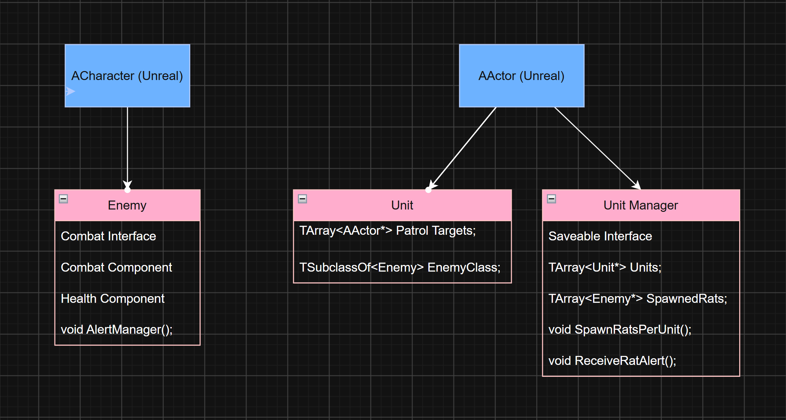

Zappy Cats: Enemy AI and Group Management System

C++, UE5 Blueprints, UE5 Widget Blueprints
Design Goals...
Zappy Cats is a 3D puzzle platformer meant to feel silly and fun. I wanted to add an enemy that aligned with those themes while still giving the player a challenge. Naturally I picked a rat, and to make it really shine, I gave it the ability to launch explosive cheese. To make it more challenging, and to enrich the level design, I also added a way to manage units of rats per designer defined areas, so that they could be spawned intentionally in the levels without having to manually place each rat.
Features...
- Individual rats can patrol around predefined targets, see the Player and chase them if in range, search for the Player if they can't see them, smell the Player if they have an odor debuff, and launch explosive cheese if the Player is within attack range
- Rats will alert their unit when they take critical damage, have died, or when they see or have lost the player
- Rats communicate via their Unit Manager, which coordinates all the rats in its unit. There can be multiple units per level.
- The Unit Manager will alert its unit if the Player gets too close or if it's under attack, and will call rats to come and defend it
- The Unit manager handles spawning rats, and if the number of alive rats in the unit falls below a designer-set threshold it will respawn them
- Rats show an icon over their heads that displays their current action, whether they're patroling, searching, pursuing, attacking, or have received orders from their Unit Manager
- Both Rats and Unit Managers have a health bar, since destroying them is required to complete each level
Approach...
I created three classes to help control and manage the enemies in each level. Managers handle spawning each enemy as defined by their Unit. Enemies communicate to their Manager by broadcasting events pertaining to gameplay.

Simplified Class Diagram illustrating the relationship between Enemy, Unit, and Unit Manager.
The Enemy class defines the behavior for each rat in the level. They're capable of taking damage, launching projectiles, sensing the Player, pathfinding to their target, and communicating with their Manager.
The Unit class is used primarily as a level editing tool. It defines the area a group of rats will spawn within and patrol, and defines which type of rat will be spawned. The Unit does not handle anything to do with actually spawning rats or dispatching their orders, it simply spacially defines the "unit" in the level. I created a blueprint version of this class and it was very helpful for setting up rat patrols and enforcing the paradigm.
The Unit Manager handles spawning each rat and orchestrating their behavior. It also passes relevant data for saving the game. Destroying every Manager in a level is required to win so it was necessary to save which ones the player had defeated. Because the Unit Manager handles spawning rats, we didn't need to save each individual rat that was destroyed.
Enemy AI...
I wrote the AI behavior directly in the Enemy class in C++. The Rat's basic behavoir is to patrol between a set of targets defined for its Unit. It picks the next target at random to make it less predictable. When the Rat sees the Player, it first alerts the Manager, then attempts to pursue as long as the Player is within range and still visible. If it gets close enough to the Player it will attack. If the Player goes out of sight, the rat will choose random locations within the radius of the Player's last known location and search for the Player. If it fails it returns back to patrol.
The Rat can take damage from melee and lasers, responding with the appropriate animations and sound effects. If it takes too much damage it will alert the Manager to call for help. Rats prioritize commands from the Manager, so if it was pursuing a different action, it will cancel it to respond to the Manager.
Communication between Rats and Managers was crucial to acheive this behavior without every rat needing to directly know about each other. To implement this, the Rats broadcast relevant events, such as when they see the Player, and the Manager subscribes to them. The Manager then decides what to do based on that event and then commands any rats as needed to respond.
Refinement...
To help Player track the rat's behavior I added a widget that appears over their head that shows icons for each of it's patrol states. For instance it shows a question mark when searching, or a block of cheese when launching cheese.
I created these and most of the other icons in the game with Procreate. The widget shrinks as the Player moves away from the rats until it eventually disappears, this way it can't crowd the screen with too much information.


(L) Player has engaged a rat in combat. The red cat face icon indicates that it is chasing the player. (R) Additional rats have been dispatched by the manager to help, as indicated by the red circle with radial lines icon.


(L) Player has eliminated a rat. Another is attacking, indicated by the cheese icon over their head, while an additional rat approaches on order by the Manager. (R) The rats can be a challenge to defeat when they all start attacking!
Variation...
To visually represent the Manager in each level I created a few different meshes depending on the theme of the level and the size of the area the manager needed to fit in. I created a VFX for the pulsing set of two green rings, which change to red when the Player is nearby. Each type of Manager has this VFX to help the Player recognize it.


(L) The main mesh used is a radio tower on top of a pile of cheese. (R) For smaller spaces the Manager is just a pile of cheese. You can also see on either side the rounded rock doors that Rats spawn from, these are defined by the Unit class.


(L) For the Pirate level I used the radio towers on land and Pirate Ships on the sea. They also have four cannons that can fire at the Player. (R) For the Space level the Managers are represented as Satellites, which rotate to track the Player and fire lasers.


(L) In space, the rats fly around on wedges of cheese. (R) Rats in pursuit!
Retrospective...
The enemies for Zappy Cats are functional and work together to make the game more challenging. That said, I think it would be intersting to add more dynamic interactions and behaviors. I designed the code so that I could easily add new enemy types, but never got around to doing it within the timeframe. With different enemy types you could have different group dynamics. Maybe there's a tank-type enemy that only spawns when the action has reached a certain level. Or maybe the Manager should be another character, like a group leader, to make it more obvious to the player that they should take them out first so that the group has no one to command it. Now I've gotten myself excited to program more dynamic enemies!